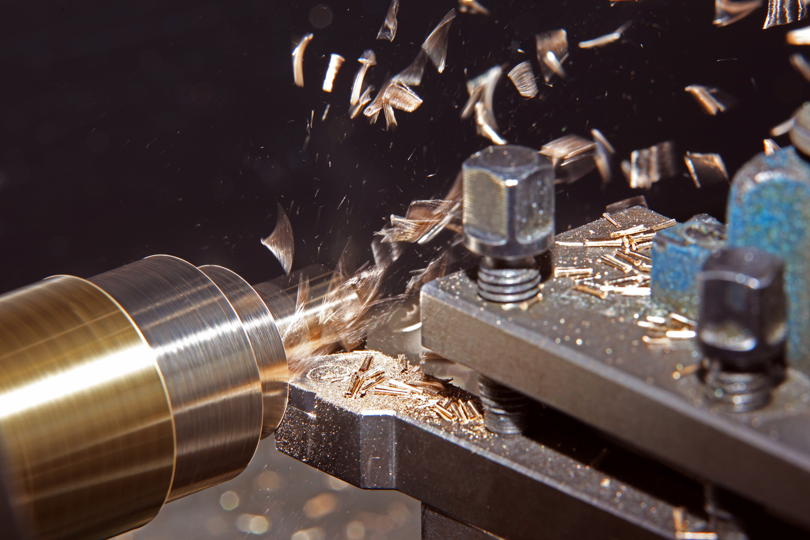
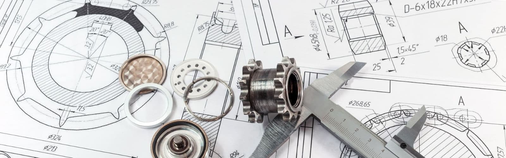

Qu'est-ce que le Tournage Conventionnel ?
Le tournage conventionnel est une méthode d'usinage traditionnelle utilisant des tours manuels. La pièce est fixée sur un mandrin et mise en rotation, tandis qu'un outil de coupe est déplacé manuellement ou à l'aide de chariots pour enlever la matière et façonner la pièce.
Cette méthode est couramment utilisée pour les petites séries, les pièces uniques, et les réparations en atelier.
Composants d'un Tour Conventionnel
- Mandrin : Maintient fermement la pièce à usiner.
- Broche : Fournit la rotation de la pièce à usiner.
- Chariot transversal : Permet de déplacer l'outil perpendiculairement à l'axe de la pièce.
- Chariot longitudinal : Permet de déplacer l'outil parallèlement à l'axe de la pièce.
- Contre-pointe : Soutient les longues pièces pour éviter les vibrations.
- Boîte de vitesse : Ajuste la vitesse de rotation de la broche.
- Boîte d'avance : Contrôle la vitesse d'avance de l'outil.
- Volants : Utilisés pour déplacer manuellement les chariots et régler la position de l'outil.

Comment Utiliser un Tour Conventionnel
- Préparation : Vérifiez que la machine est propre et lubrifiée. Assurez-vous que les outils et les équipements sont en bon état.
- Installation de la pièce : Fixez la pièce dans le mandrin et alignez-la correctement.
- Choix de l'outil : Sélectionnez un outil adapté à l'opération (dressage, alésage, filetage, etc.).
- Réglage des paramètres : Ajustez la vitesse de rotation, l'avance, et la profondeur de coupe en fonction du matériau.
- Usinage : Déplacez les chariots pour effectuer l'opération souhaitée. Travaillez avec précaution pour éviter les erreurs ou les accidents.
- Contrôle : Vérifiez régulièrement les dimensions de la pièce pour vous assurer qu'elles respectent les spécifications.
Techniques Courantes en Tournage
- Dressage : Usinage d'une surface plane perpendiculaire à l'axe de la pièce.
- Cylindrage : Réduction uniforme du diamètre extérieur de la pièce.
- Alésage : Agrandissement ou création de trous cylindriques.
- Filetage : Création de filets sur une surface extérieure ou intérieure.
- Rainurage : Usinage de rainures ou gorges pour des applications spécifiques.
- Chanfreinage : Création de bords inclinés pour améliorer l'assemblage ou la sécurité.
Outils et Accessoires pour le Tournage Conventionnel
- Outils de coupe en acier rapide ou carbure : Adaptés à divers matériaux et opérations.
- Plaquettes interchangeables : Offrent une flexibilité et une efficacité accrues.
- Mandrins à 3 ou 4 mors : Pour maintenir solidement des pièces cylindriques ou irrégulières.
- Contre-pointe : Essentielle pour les longues pièces.
- Lunettes : Fournissent un support supplémentaire pour les pièces longues ou fines.
Types de Mandrins
Les mandrins permettent de maintenir des pièces en place lors des opérations de tournage :
- Mandrin à Mors Indépendants : Réglage individuel de chaque mors.
- Mandrin à 3 Mors : Auto-centrant, rapide et précis.
- Mandrin à 4 Mors : Idéal pour les pièces asymétriques.
- Mandrin à 6 Mors : Répartition uniforme des forces pour des pièces fragiles.
Types de Mors
Les mors se déclinent en plusieurs types selon l'usage :
- Mors Doux : Fabriqués en acier non traité, adaptables.
- Mors Durs : En acier trempé, parfaits pour des pièces standardisées.
- Mors Réversibles : Adaptables à plusieurs tailles de pièces.
- Mors Spéciaux : Conçus pour des formes complexes.
Usinage de Pièces Coniques
Le tournage de pièces coniques est une opération essentielle dans de nombreux ateliers. Voici les méthodes principales utilisées pour produire des cônes :
Méthodes pour Tourner un Cône
- Inclinaison du Petit Chariot : Idéal pour les petits cônes avec un angle précis.
- Décalage de la Contre-Pointe : Adapté aux cônes de grande longueur.
- Outil Forme : Utilisé pour des cônes avec des angles fixes.
- Copieur : Permet de reproduire des profils coniques complexes.
Calculs pour les Cônes
L'angle du cône peut être calculé avec la formule suivante :
tan(α) = (D - d) / (2L)
Où :
- D : Diamètre plus grand.
- d : Diamètre plus petit.
- L : Longueur du cône.
Utilisation d’un Copieur
Les copieurs sont des outils précieux pour reproduire des formes complexes, comme des cônes ou des profils personnalisés, dans un atelier de tournage.
Types de Copieurs
- Copieur Mécanique : Suit un gabarit fixé pour guider l'outil.
- Copieur Hydraulique : Utilise un système hydraulique pour des formes complexes.
- Copieur Numérique : Programmation assistée pour des profils précis.
Avantages
- Production rapide et précise de pièces en série.
- Reproductibilité élevée pour les formes complexes.
- Réduction du temps de réglage manuel.
Lecture et Compréhension des Plans Techniques
Pour réaliser une pièce selon un plan :
- Identifiez les cotes critiques et les tolérances associées.
- Interprétez les symboles de finition et de rugosité.
- Planifiez les étapes d'usinage pour respecter les dimensions spécifiées.
Contrôle Qualité et Métrologie
Instruments Utilisés
- Pied à coulisse : Pour des mesures précises des diamètres et longueurs.
- Micromètre : Utile pour les dimensions nécessitant une grande précision.
- Comparateur : Vérifie les concentricités et les déviations.
- Jauge de filetage : Contrôle la précision des filets usinés.
Vérification de la Conformité
Chaque pièce doit être mesurée et comparée aux tolérances pour garantir la qualité et l'ajustement.
Adaptation aux Matériaux
Les vitesses de coupe, avances et profondeurs de passe doivent être ajustées selon les matériaux :
- Acier : Vitesse de coupe faible, refroidissement intensif.
- Inox : Nécessite des outils robustes et une lubrification importante.
- Aluminium : Vitesse élevée, faible résistance mécanique.
- Plastiques : Vitesse modérée pour éviter la fonte ou la déformation.